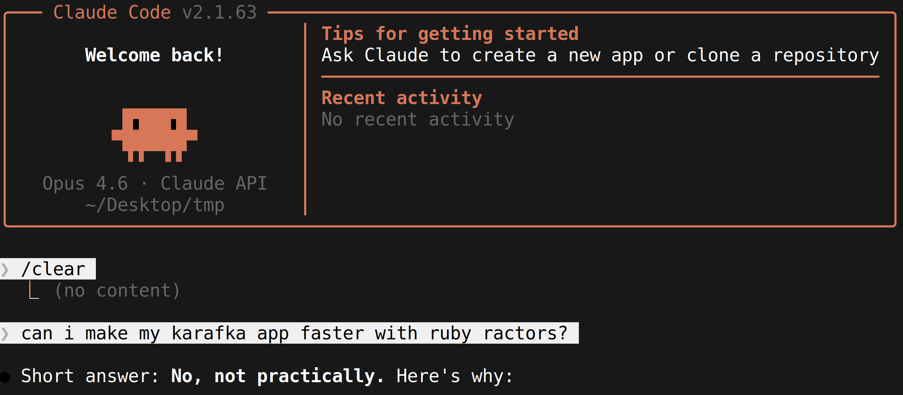

Thread-Coordinated Ractors
The Pattern That Delivers
Maciej Mensfeld
RubyKaigi 2026
Welcome everyone. Today I want to show you a pattern I have been refining for over a year - using Ractors for real, production parallelism in Ruby. The key idea is coordinating them with a thread, not trying to make your whole app Ractor-safe.
The word "delivers" in the title is intentional. Most Ractor talks end with "promising, but not yet." This one ends with shipping code and real benchmark numbers.
This is not a Ractor tutorial - I will assume you roughly know what they are.
Maciej Mensfeld
Karafka, Shoryuken, PGMQ-Ruby, COI (AI Sandbox)
RubyGems Security Team
Mend.io
@maciejmensfeld
Quick intro - I work at Mend.io and I build background processing tools for Ruby. Karafka for Kafka, Shoryuken for SQS, PGMQ-Ruby for Postgres queues, and COI which is an AI sandbox for containerized development. I am also part of the RubyGems security team.
A Long Wait
Waiting for Ractors since they were called Guilds .
I have been waiting for Ractors since Koichi proposed Guilds back in 2016. I was excited then and I am still excited now.
It makes me genuinely happy to be standing here in Japan talking about them - not as a future feature, but as something I have actually shipped.
Today's Plan
The Problem - why Ractors?
The Investigation - what works, what doesn't
Patterns - building the Ractor pool
Production - benchmarks, limits, takeaways
Here is what we will cover today. Four parts, roughly seven minutes each. We will start with the problem, then investigate what works and what does not, look at the patterns I built, and finish with production results and takeaways.
10+ Years of Background Processing
Fibers. Threads. Processes.
All useful. None of them parallelize CPU-bound work in a single process.
I have spent over a decade building background processing engines and I have used every Ruby concurrency primitive in production.
Fibers are great for cooperative I/O. Threads work well for blocking I/O. Forks distribute load but each process stays single-threaded.
The gap is CPU-bound work - parsing, validation, transformation. Threads cannot parallelize it because of the GVL, and forks do not speed up a single process. That gap is what brought me here.
I Hit This Wall in Karafka
Raw bytes
Deserialize
10,000 messages
Filter
keep 50
Business logic
50 messages
Deserialization runs on every message. Business logic runs on a fraction.
Karafka is a Kafka processing framework for Ruby and Rails - think Sidekiq, but for Kafka.
Look at this pipeline. 10,000 messages hit the deserializer, then the filter drops that to just 50, and business logic only runs on those 50.
So you are spending 99 percent of your CPU on data you will throw away. That is why deserialization is the natural target for parallelization.
Where Does Time Actually Go?
Msg building
Filtering
Deserialization
Validation
User consume
Offset mgmt
5.7%
1.0%
86.0%
3.5%
1.1%
2.6%
CPU-only pipeline. No DB calls, no network I/O.
I profiled a real Karafka pipeline with a 5KB JSON payload, and this is where the time actually goes.
86 percent is in deserialization. Everything else combined - message construction, filtering, validation, user code, offset management - is only 14 percent.
Important caveat - this is a CPU-only pipeline. If your consumer hits a database, these proportions change dramatically. We will come back to that.
But the point is - deserialization is not just a part of the work. It IS the work.
Bigger Payloads = More Time in Deserialization
0%
25%
50%
75%
100%
42%
86%
95%
99%
524B
5.1KB
18.8KB
78KB
CPU-only pipeline. When your consumer hits a DB for 100ms, deserialization drops to <2%.
Same chart but with four payload sizes. As you can see, as payloads grow, deserialization eats everything.
Again, this is for CPU-bound consumers. If yours waits on a database, the proportions look different.
If I can speed up deserialization...
...I speed up everything .
When one stage is 86 to 99 percent of the cost, optimizing it is the same as optimizing the whole pipeline.
I've Tried Everything
Threads - useless for CPUAsync - useless for parsingForking - per-process throughput unchanged
The GVL blocks parallelism for pure-Ruby CPU work.
I have tried every Ruby tool over the years for this exact problem.
Threads are fine for I/O, but parsing JSON is pure-Ruby CPU work - they queue up on the GVL and you get zero parallelism.
Async solves a different problem - non-blocking I/O. It does not help with CPU work.
Forking scales horizontally but does nothing for the CPU profile of a single process.
I needed something that bypasses the GVL entirely while staying inside one Ruby process.
Ractors
Each Ractor has its own GVL. True parallel execution.
Ractors are Ruby's answer to the GVL problem. Each Ractor gets its own GVL, so multiple Ractors really do run pure-Ruby code in parallel on multiple cores.
The catch - and this is the whole reason Ractors have not taken off - is that everything crossing a Ractor boundary has to be shareable. Frozen, immutable, or explicitly moved.
Ractors look like threads, but the rules are completely different.
It's Not That Simple
You need the right use-case
You need the right data shape
You need to account for framework overhead
You need realistic expectations
Making Ractors deliver is an engineering challenge, not a flag you flip.
But making Ractors work in practice is genuinely complex. You need the right use-case, the right data shape, and realistic expectations - we are talking 2 to 3x on the right workload, not magic 10x.
Framework overhead is real. Coordination, allocations, boundary crossings - they all eat into your gains.
In this talk I will show you the failures honestly alongside the wins.
A Library Author's Perspective
I build middleman layers - between infrastructure and your code.
I control the plumbing , not the business logic.
I can't tell users to switch runtimes, gems, or architectures.
~95% run CRuby. I have to solve it here .
I want to be clear about my perspective here. I am not looking at Ractors from a Ruby core team angle. I am a library author. My view is utilitarian - I need them to solve a real problem for real users, today.
I build Karafka - it is middleware between raw Kafka bytes and your code. I can isolate pipeline stages without touching user code at all.
But I cannot demand architectural changes. "Just use JRuby" is an evacuation plan, not a solution.
About 95 percent of my users run CRuby. I have to solve it within their constraints.
The Unlock
We can't assume user code is Ractor-safeWe can't require them to make it so
Library authors can isolate pure input/output operations
You don't need a Ractor-safe app.building blocks .
This is the key idea of the whole talk. If you remember one slide, let it be this one.
Almost no user code is Ractor-safe today. We cannot force people to rewrite their apps. But as library authors, we can find isolated operations - pure input, pure output, no shared state - and run those in Ractors.
You do not need a Ractor-safe app. You need Ractor-safe building blocks.
Deserialization is the perfect candidate - bytes in, parsed object out, no global state.
"Ractors are slow. Everyone knows that."
This is the conventional wisdom. And it is exactly what this talk is going to dismantle. Let that sit for a moment.

This is a real screenshot from Claude Code. Even the AI confidently told me - no, Ractors will not work well with Karafka.
Well... let us see about that.
3x slower
JSON parsing with Ractors was painfully slow
A year ago, if you tried the obvious thing - parse JSON in a Ractor, send the result back - you got code that was three times slower than just doing it on one thread.
Three times slower, with all the added complexity of Ractor coordination. No wonder nobody used them.
Bug #19288
I reported that bug myself.
Bug 19288 on the Ruby tracker - I filed it myself. It documented exactly the slowdown I just described.
I was not quiet about it. I posted on social media, I brought it up everywhere. I had been waiting for Ractors for a decade and the first real test failed.
But complaining productively, with reproducible benchmarks, is how the language gets better.
RubyKaigi 2025
I talked with the core team about Ractor pain points
And then they went and fixed things
Last year at RubyKaigi I had hallway conversations with Aaron Patterson, Koichi Sasada, Jean Boussier, and others about Ractor pain points.
I expected the usual "interesting, we will think about it." Instead, in the months that followed, several of those exact pain points got addressed in the language.
This is the part of Ruby I love - community feedback going straight into the runtime.
What Changed in 2025
A year of serious investment into Ractors:
Ractors no longer crash the VM
Ractor::Port - targeted messagingmove: true - zero-copy transferJSON.parse(..., freeze: true) - no longer crashes in Ractors
And more. Time to try again.
These are the key changes that made the pattern in this talk possible.
Ractor::Port gives us targeted messaging. Before, Ractor.receive was a broadcast. Port lets you address a specific receiver, which is what you need to coordinate a worker pool.
move: true gives us zero-copy ownership transfer. Instead of deep-copying, you just transfer ownership.
And freeze: true on JSON.parse - this option has existed since Ruby 3.0, but it used to crash when used inside Ractors. Now it works reliably. Parsed objects come out already Ractor-shareable. We will dig into why this is huge in a few slides.
With these three changes, I was finally ready to try again.
The Investigation
Now we shift from "why bother" to "how I actually made it work." This is the longest section - the meat of the talk.
I will walk through the failed attempts honestly, because the failures explain why the final pattern looks the way it does.
Attempt 1: Naive Deep Copy
result = Ractor.new(payload) { |p| JSON.parse(p) }.takeParse JSON in Ractors, send results back
The most obvious approach - spawn a Ractor, parse JSON inside, take the result back.
The problem is that the parsed Hash is not shareable, so .take deep-copies the entire object graph. Thousands of cloned objects per message. The copy cost eats the parallelism gain completely.
This is the version that gives Ractors their bad reputation.
0.29x
3.4x slower than sequential. Ouch.
0.29x. Three and a half times slower than just doing it on one thread. This is exactly the result that bug 19288 documented. It is not subtle - it is a face-plant.
Attempt 2: make_shareable
results = payloads.map { |p| JSON.parse(p) }
Ractor.make_shareable(results)Deep-freeze everything so it can be shared
Second attempt - parse normally, then deep-freeze the result with Ractor.make_shareable. Frozen things are shareable, so this should avoid the deep-copy problem.
But make_shareable still has to traverse the whole object graph - every Hash, every Array, every String - and freeze each one. You have replaced one full traversal with another.
It is faster than deep copy, but you are still paying a Ruby-level walk over every object you just created in C.
0.42x
Still slower than sequential.
0.42x. Better than 0.29x, but still slower than sequential. Two attempts, two failures.
But the pattern starts to emerge - the parse itself is not the bottleneck. Moving data across the Ractor boundary is.
JSON.parse is a C extension .
What if it could freeze objects while creating them ?
So here is the key insight. JSON.parse is a C extension. It is already allocating every Hash, Array, and String during the parse. It already touches every object exactly once.
What if freezing happened during that single C-level pass? Then there would be no second Ruby-level traversal. You get shareability for free.
This is the insight that drove the JSON change.
The Breakthrough
JSON.parse(payload, freeze: true)Returns objects that are already Ractor-shareable
The freeze: true option has been in the JSON gem since Ruby 3.0, but the breakthrough is realizing what it gives us for Ractors. It freezes every object as it is allocated, in C, during the parse. That means the result is immediately Ractor-shareable - no Ruby-level traversal needed.
The cost is 1 to 15 percent more parse time depending on payload shape. But that small cost unlocked the entire pattern I am about to show you.
Transfer Strategy Comparison (65KB payload)
0x
1.0x
2.0x
sequential
0.29x
0.42x
2.3x
Deep copy
make_shareable
freeze: true
Three transfer strategies, same Ractors, same workload, same payload.
Deep copy: 0.29x - the catastrophe. make_shareable: 0.42x - slightly less catastrophic. freeze: true: 2.3x - actual parallelism, finally.
The whole difference between "Ractors are slow" and "Ractors deliver" is the strategy you use to cross the boundary. Same primitive, completely different outcome.
2.3x
From 0.29x to 2.3x . Same Ractors. One flag.
One keyword argument took us from 3.4x slower to 2.3x faster. Same hardware, same Ractors, same workload. Just a different way of crossing the boundary.
Frozen Input = Zero-Copy In
payload.freeze at the sourceFrozen strings are Ractor-shareable for free
Frozen in, freeze: true out. Zero-copy both ways.
Now the input side. Kafka payloads are byte strings - read-only by nature. payload.freeze makes them Ractor-shareable for free. No copy, no move needed.
Combine the two - frozen input goes in, freeze: true output comes back. Zero-copy in both directions. This is where the whole pattern clicks together.
But Which Ractor Pattern?
There's more than one way to coordinate Ractors
Now we know how to move data efficiently. But "use Ractors" is not a single design - there are several plausible coordination patterns. I tested four, and the next slides show you the data that picked the winner.
4 Patterns Tested
Pattern How it works A) Thread-Coordinated Readiness signaling, Mutex dispatch B) Pre-Partitioned Blast-send N chunks, no protocol C) Ephemeral Fresh Ractors per batch D) Ractor Supervisor Coordinator Ractor in the middle
Let me quickly walk you through the four patterns I tested.
Thread-Coordinated - what I ended up shipping. A regular Ruby thread waits for both a ready Ractor and available work, then matches them up.
Pre-Partitioned - split the batch into N chunks, send each to a fixed Ractor, no runtime coordination. Simple and fast in the easy case.
Ephemeral - spawn a fresh Ractor for each batch. Easiest mental model, worst startup cost.
Ractor Supervisor - same as A but the coordinator is itself a Ractor instead of a thread. Adds one extra boundary crossing.
Spoiler - A wins, and the why is the rest of this section.
Single Producer Results
0x
1.0x
2.0x
1.5x avg
Thread-Coord
1.6x avg
Pre-Partitioned
1.6x avg
Ephemeral
1.6x avg
Ractor Sup.
524B
5.1KB
18.8KB
78KB
All patterns win. But which one handles contention ?
With a single producer feeding the pool, all four patterns clear the 1.0x bar. Average speedups are in the 1.5 to 1.6x range.
If this were the only benchmark, you could pick any of them. But single-producer is the easy case - it hides the failure modes.
The real question is - what happens when multiple consumers share the pool?
Narrowing Down
Ephemeral - 0.88x on small payloads Ractor Supervisor - 10% overhead on large payloads
Two remain: Thread-Coordinated vs Pre-Partitioned
Two patterns drop out before we even get to contention.
Ephemeral pays Ractor creation cost on every batch. Spawning a Ractor is not free - it takes tens of milliseconds. On small payloads that cost dominates.
Ractor Supervisor adds an extra boundary crossing because the coordinator is itself a Ractor. On large payloads you eat about 10 percent overhead.
That leaves two contenders - Thread-Coordinated and Pre-Partitioned.
In Production, It's Never Just One
Multiple consumers share a single Ractor pool
Single-producer benchmarks hide this. Production doesn't.
In Karafka, you have many topics, many partitions, many consumers - all running in the same process. They all want to deserialize messages. They share a single pool.
When all the workers are busy, the next caller waits. That waiting is contention. Microbenchmarks hide this. Production does not.
Under Contention
0
30K
60K
90K
110K
msgs/s
1
3
5
8
concurrent consumers
48K
93K
78K
76K
76K
100K
62K
42K
Thread-Coordinated
Pre-Partitioned
Here is throughput as we scale from 1 to 8 concurrent consumers.
With one consumer, Pre-Partitioned wins - 76K versus 48K. With three, both peak and they are close.
But at five and eight consumers, Pre-Partitioned collapses - 62K, then 42K. Thread-Coordinated holds steady around 76K.
Pre-Partitioned is faster when uncontended but falls apart under contention. Thread-Coordinated queues work instead of blocking.
Tail Latency Tells the Story
0ms
25ms
50ms
75ms
100ms
11ms
27ms
2.5ms
100ms!
Thread-Coordinated
Pre-Partitioned
p50
p99
Thread-Coord: predictable. Pre-Part: 40x tail spike .
Latency is the metric that wakes you up at 3am.
Thread-Coordinated: p50 is 11 milliseconds, p99 is 27 milliseconds. A 2.5x spread. Predictable.
Pre-Partitioned: p50 is 2.5 milliseconds - beautiful - but p99 is 100 milliseconds. A 40x spread. Sometimes you just get stuck behind a giant batch.
For a streaming system, p99 is what matters. Thread-Coordinated wins on the metric that counts.
Separation of Concerns
Callers never block
Coordinator matches work to available Ractors
Saturated? Work queues up; callers keep going
Why does Thread-Coordinated handle contention so well? Because the caller and the dispatch decision are decoupled.
The caller just pushes work onto a Ruby Queue and moves on. A separate coordinator thread sits in a loop - wait for work, wait for a ready Ractor, hand it off.
If the pool is saturated, the queue grows. Callers do not notice. Backpressure is implicit and graceful.
Coordinator Thread Overhead?
~0%
The natural worry is - you added an extra thread. Does that thread cost something?
Measured overhead is essentially zero. The coordinator spends 99.9 percent of its time blocked on a queue or a Ractor port. It only wakes up when there is actual work to dispatch. The bottleneck is always the deserialization itself.
The Pattern
Now let me show you what the winning pattern actually looks like - diagram first, then code. If you only stay for ten minutes, stay for these slides.
Thread-Coordinated Ractor Pool
Listener 1
Listener N
...
Work
Queue
non-blocking
push
Coordinator
Thread
waits for ready
worker + work
Ractor Worker 1 - parse + validate
Ractor Worker 2 - parse + validate
...
Ractor Worker N - parse + validate
move: true
signal ready
results via Future (already shareable - freeze: true)
Let me walk you through this diagram left to right.
On the left, listener threads push raw payloads onto a Ruby Queue. Non-blocking - they never wait on the pool.
In the center, the coordinator thread waits for both work and a ready Ractor, then matches them up.
On the right, the worker Ractors parse, validate, signal ready, and repeat. Results go back via Ractor::Port - already shareable, no copy needed.
The key point is that only the coordinator and the workers talk to each other. Callers stay out entirely.
Design Principles
Principle How Persistent pool Create once, reuse forever Non-blocking dispatch Callers never wait Zero-copy both ways move: true in, freeze: true outPer-message rescue Errors never kill workers
Four design principles.
Persistent pool - Ractor creation is expensive, tens of milliseconds. You create the pool once at app boot and reuse it forever.
Non-blocking dispatch - the caller pushes and moves on. They never block on pool capacity.
Zero-copy both ways - move: true gets the payload in without a copy, freeze: true gets the result out without a copy.
Per-message rescue - if one payload is malformed, the worker rescues, marks it as a failure, and continues. The Ractor never dies.
Start Work Early
# Step 1: Dispatch to Ractors immediately
future = pool.dispatch_async(messages, deserializer)
# Step 2: Job sits in thread pool queue...
# Ractors are already working
# Step 3: When a thread picks it up, results are waiting
results = future.retrieveRactors parse while the job waits in the thread pool queue.
Here is a subtle but important optimization. We dispatch to the Ractors as soon as we receive the messages, before the job even goes into the worker thread queue.
So the flow is - poll Kafka, fire off dispatch_async to Ractors, then the job goes into the thread queue. By the time a thread picks it up, the Ractors have already been parsing for several milliseconds.
You are getting parallelism from the dead time between "we have data" and "we have a thread free to process it."
Crossing the Ractor Boundary
# Mutable objects are rejected
ractor.send(message) # => Ractor::IsolationError!
# Extract only what's needed into a frozen Data class
MessageProxy = Data.define(:raw_payload)
proxy = MessageProxy.new(raw_payload: payload)
ractor.send(proxy) # works
Your existing Message object has methods, mutable state, references back to the consumer. Ractors reject all of that.
The fix is to extract only what the Ractor needs into a Data.define class. These are frozen, value-typed, and automatically shareable since Ruby 3.2.
At the boundary, you package what you need into a Data and send that. Clean separation without making Message Ractor-safe.
The Worker (inside the Ractor)
loop do
coordinator_port.send({ worker_id: wid, port: my_port })
msg = my_port.receive
results = msg[:data].map do |payload|
parsed = JSON.parse(payload, freeze: true)
validate(parsed)
parsed
rescue StandardError => e
error_marker # never crash the worker
end
msg[:result_port].send({ batch_index: msg[:bi], results: results })
end
Let me walk through the highlighted lines.
Line 2 - the worker announces readiness. It tells the coordinator "I am free, here is where to send my next job."
Line 3 - it blocks waiting for work to arrive on its private port.
Lines 4 through 8 - the actual work. Parse with freeze: true, validate, return the parsed object.
Lines 9 and 10 - per-message rescue. If something fails, we swap in a frozen error marker. The worker keeps going - one bad payload does not poison the whole batch.
Line 11 - send results back via the result port. And the loop repeats.
Dispatch (coordinator thread)
# Caller side - non-blocking push
@work_queue.push({ data: batch, result_port: rp, batch_index: idx })
# Coordinator thread - match work to a ready worker
loop do
work = @work_queue.pop # blocks on work
ready = @coordinator_port.receive # blocks on worker
ready[:port].send(work, move: true) # zero-copy dispatch
end
This is the other half, and it is a tiny amount of code for what it does.
At the top - the caller side. One line. Push the job onto a queue and return immediately.
At the bottom - the coordinator loop. Two blocking pops - one for work, one for a ready worker. Whichever comes second unblocks the dispatch.
Notice move: true on the send - that is the zero-copy ownership transfer. The coordinator no longer owns the work hash, the worker does.
The whole pattern is maybe 30 lines of Ruby. The complexity is in the design, not the code.
Parse + Validate (500 msgs, 5 Ractors)
524B
5.1KB
18.8KB
78KB
1.0x
1.8x
2.6x
1.9x
1.9x
Five Ractors, 500 messages, parse plus validate. Here are the speedups across four payload sizes.
524 bytes: 1.8x. Small messages, but still a solid win.
5.1 KB: 2.6x - this is the sweet spot. A typical event payload.
18.8 KB and 78 KB: both 1.9x. Holds up at large sizes too.
Meaningful speedups at every size we benchmarked.
Best Result
~3.5x
5.1KB at 8+ Ractors
With more Ractors and the right payload size, we hit about 3.5x. That is the headline number. Compare this to threads, which top out at 1.0x for the same workload because of the GVL.
Move More Into the Ractor
Any isolated, CPU-bound work can move inside
More work per message = bigger gains
Once the Ractor pool exists, deserialization is not the only thing you can run inside it. Anything that is CPU-bound and operates on isolated data is a candidate - validation, transformation, filtering, schema checks.
The more work you push into the Ractor per message, the better the amortization. Coordination cost is fixed, useful work grows.
And the benchmarks I am showing already include validation, so the numbers are realistic.
Mixed Realistic Workload
524B–78KB shuffled, parse + validate
Workers Speedup 5 threads 1.16x 1 ractor 0.69x 2 ractors 1.33x 5 ractors 2.59x 8 ractors 2.82x
This is a mixed workload with shuffled payload sizes - what production actually looks like.
Five threads: 1.16x. The GVL serializes the work. One Ractor: 0.69x - overhead without benefit.
But two Ractors: 1.33x - already beats five threads. Five Ractors: 2.59x. Eight: 2.82x.
Even a tiny Ractor pool outperforms a respectable thread pool for this kind of work.
Why Not Just Threads?
I know what you are thinking - threads are simpler, why bother with Ractors? The next few slides answer that directly. For this class of work, threads literally do not parallelize at all.
Threads vs Ractors
0x
1.0x
2.0x
3.0x
4.0x
5.0x
1.0x
1.09x
2.43x
Parse+validate
5 workers
0.81x
3.17x
Scaling
8 workers
0.79x
2.27x
Sustained
continuous load
1.02x
2.44x
Contention
5 consumers
Threads
Ractors
Four real workloads, threads versus Ractors at the same worker count.
Parse and validate with 5 workers: threads 1.09x, Ractors 2.43x.
Scaling with 8 workers: threads 0.81x - actually slower than sequential. Ractors 3.17x.
Sustained load: threads 0.79x, Ractors 2.27x. Contention: threads 1.02x, Ractors 2.44x.
The pattern is consistent - threads contribute nothing for pure-Ruby CPU work. Ractors deliver real parallelism every time.
Threads vs Ractors: Scaling
0x
1.0x
2.0x
3.0x
4.0x
5.0x
speedup
1
3
5
8
workers
1.0x
0.81x
3.17x
Threads
Ractors
Same metric, scaled across worker count.
Threads are flat. 1, 3, 5, 8 workers - barely above 1.0x. More workers do not help and sometimes they hurt.
Ractors show a clean upward curve. 1 worker: 0.79x. 3 workers: 2.07x. 5: 2.5x. 8: 3.17x. Each added worker adds real throughput.
This is the chart that justifies the entire pattern. The shapes of these two curves are the answer to "why not just threads."
Threads plateau at ~1x .
Ractors bypass the GVL : 3.2x at 8 workers.
Threads plateau at 1x. Ractors scale linearly until you run out of cores. No clever code - the difference is purely in which primitive you choose.
CPU Efficiency
0x
1.0x
2.0x
3.0x
1.8x
1.4x
2.6x
1.5x
1.9x
1.3x
1.9x
1.7x
524B
5.1KB
18.8KB
78KB
Wall speedup
Total CPU cost
Real parallelism, not just overhead.
Important sanity check - are we just burning more CPU for the same work?
Wall speedup should be much higher than total CPU cost. And at every payload size, it is.
We are not just trading wall time for CPU time - we are getting more done per CPU-second.
Beyond Microbenchmarks
Microbenchmarks lie. Production doesn't.
Everything I have shown so far was an in-process benchmark. Generated payloads, in-memory work, no broker.
Microbenchmarks are great for isolating effects but they are famous for not surviving contact with reality. So I wired the whole pattern up to an actual Kafka broker and re-ran everything. The next slides are those results.
End-to-End Setup
Karafka → broker → Karafka → Ractor pool
6 topics: 1, 5, 10, 25, 50, 100 KB
Payload shapes collected from real Karafka users
4 Ractors
The setup - real producer, real local broker, real consumer, then into the Ractor pool.
Six topics, each with 2000 messages of a different size - 1, 5, 10, 25, 50, and 100 KB. Five partitions per topic, four Ractor workers.
No in-process payload generation, no fake messages. Real bytes off the wire.
JSON Crossover (End-to-End)
0x
0.5x
1.0x
1.5x
2.0x
seq
1.44x
1.57x
1.35x
1.75x
1.55x
1.36x
1 KB
5 KB
10 KB
25 KB
50 KB
100 KB
500 msgs per topic, 4 Ractors
Wins 1.35x–1.75x across every size.
JSON parse plus validate, end-to-end through Kafka. You can see the numbers on the chart.
These are smaller than the in-process benchmarks because broker round-trip and Karafka overhead are now part of the wall time. That is exactly what we want - realistic numbers.
The key takeaway is that the pattern holds at every payload size. No cliff anywhere.
More Threads Don't Help (25 KB)
0
250
500
750
1000
msgs/s
1
2
4
8
concurrency level
509
509
549
584
736
834
898
840
Threads (GVL-bound)
Ractors
Inline: GVL-flat. Pool: scales and holds.
25 KB payloads, scaling Karafka's worker thread count from 1 to 8.
The red dashed line is inline deserialization in the worker threads. Flat - 509, 509, 549, 584 messages per second. Adding threads barely moves the needle. Classic GVL behavior.
The green line is the same workload but with the Ractor pool. It climbs from 736 to 898, then holds at about 840 with 8 workers.
Two takeaways - the pool delivers real scaling, and the slight dip at 8 workers shows there is a sweet spot.
Avro Crossover (End-to-End, Patched Gem)
0x
0.5x
1.0x
1.5x
2.0x
2.5x
seq
1.87x
1.64x
1.69x
1.62x
1.36x
0.99x
1 KB
5 KB
10 KB
25 KB
50 KB
100 KB
500 msgs, 4 Ractors, Avro gem + ~20-line Ractor-compat patch
Same pattern, inverted shape .
Same end-to-end setup, but with Avro instead of JSON. The Avro gem is not Ractor-safe out of the box - I had to apply about a 20-line patch which I plan to upstream.
Notice the shape on the chart - best speedups at small payloads, dropping at large. That is the opposite of JSON. The next slide explains why.
Why the Different Shape?
JSON Avro Parse cost / byte High (text scanning) Low (binary, schema-driven) Sweet spot Mid-range (5-25 KB) Small (1-10 KB) Drops off at 100 KB+ 50 KB+
Speedup tracks parse-to-overhead ratio , not payload size alone.
Avro decode is much cheaper per byte - it is binary, schema-driven, no delimiter scanning.
With JSON, the parse cost dominates and grows with size - bigger payloads mean bigger wins.
With Avro, the parse is so cheap that Hash construction dominates at large sizes. That part is not parallelized.
The key lesson is that Ractor speedup tracks the ratio of expensive isolated work to fixed output construction. Different formats give you different ratios.
Ractors vs "Just Use More Threads"
Payload Best of 5-10 threads 1 thread + 8 Ractors Speedup
small (1.7 KB)
6,755 msg/s
15,049 msg/s
2.2x
medium (6 KB)
1,680 msg/s
9,553 msg/s
5.7x
large (64 KB)
188 msg/s
255 msg/s
1.4x
xlarge (163 KB)
47 msg/s
139 msg/s
3.0x
1 thread + Ractors beats 5-10 threads at every size.
These are the two configurations Karafka users actually choose between - more threads, or one thread plus a Ractor pool.
Small payloads: 2.2x faster. Medium: 5.7x - the most dramatic. Large: 1.4x. Extra large: 3x.
In every row, one thread plus Ractors beats 5 to 10 threads. Adding threads to GVL-bound work actively hurts at large payloads.
The GVL Contention Trap: Threads + Ractors
Payload R=4, c=1 R=4, c=5 R=4, c=10 Degradation
small (1.7 KB)
13,072
12,683
10,339
−3% → −21%
medium (6 KB)
3,826
1,495
1,665
−61%
large (64 KB)
248
93
59
−62% → −76%
Sweet spot: concurrency=1 + Ractors.
The natural follow-up question - what if I add more threads on top of the Ractor pool? The answer is no, do not do that.
Small payloads: 3 to 21 percent degradation. Medium: 61 percent drop. Large: 62 to 76 percent drop.
Every thread contends on the coordinator and the GVL for dispatch bookkeeping. More threads multiplies contention.
My strong recommendation - set concurrency to 1 for Ractor-pool topics.
The Honest Takeaway
Ractors: 1.4x - 5.7x faster than adding threads.
1.35x - 1.75x faster than sequential baseline.
The GVL bottleneck is gone. Framework overhead remains - separate problem, separate fix.
Across all payload sizes we tested end-to-end, Ractors deliver 1.4x to 5.7x speedup over threads. Adding more threads without Ractors never helps - pure-Ruby CPU work serializes on the GVL.
The Ractor pool fixes exactly the GVL problem. Parsing moves out of the main VM. Each Ractor has its own GVL.
Framework overhead is still paid - that is separate optimization work. But the big win, removing GVL contention, is shipped.
Production Concerns
The part skeptics care about
Now I want to switch from benchmarks to the questions skeptical engineers will ask. What about errors? What about gem compatibility? What is the cost for users who do not enable this? Let me address them directly.
Memory Overhead
Pool size Idle ΔRSS Active ΔRSS Per worker 5 workers ~0.2 MB ~1.5 MB ~0.3 MB 10 workers ~0.3 MB ~3.0 MB ~0.3 MB 20 workers ~0.4 MB ~6.0 MB ~0.3 MB
~0.3 MB per active worker. Linear, not multiplicative.
A Karafka consumer typically uses hundreds of MB. The pool is a rounding error.
"Is not every Ractor a whole new VM?" No - they share bytecode and constants. They get their own heap and stack, but those start tiny.
About 0.3 MB per active worker, linear. 20 workers is 6 MB. A typical Karafka process uses 200 to 400 MB - the pool is a rounding error.
Even 8 processes times 16 Ractors is still under 50 MB extra.
Ractor Compatibility
Library Works? JSON (stdlib) YES CSV (stdlib) YES YAML/Psych YES ERB (stdlib) YES MessagePack NO - UnsafeError Avro ALMOST - with patches dry-validation NO - Proc closures json_schemer NO - "not supported yet"
Only stdlib is Ractor-safe today.
Here is the ecosystem reality check. Stdlib works - JSON, CSV, YAML, ERB - all out of the box.
MessagePack gives you an UnsafeError. Avro works with about 20 lines patched. dry-validation is blocked by Proc closures. json_schemer literally returns "not supported yet."
Stdlib is the safe path today. Third-party support is the number one barrier to wider adoption.
Cost for Non-Ractor Users?
Extra work per batch Cost parallel? cached ivar check~17 ns Immediate#retrieve → nil~39 ns BatchMetadata extra field ~0 ns Total overhead per batch ~56 ns
0.075% of a typical batch. Effectively zero.
The other big concern - am I paying for it if I do not use it?
Barely. 56 nanoseconds per batch total. A 100-message batch takes 74,000 nanoseconds to deserialize - that is 0.075 percent. Round it to zero.
Safe to ship as default. Non-Ractor users pay nothing meaningful.
Decision Table
Payload Min messages to win 18KB+ 25 5KB+ 50 500B 100 < 500B, < 50 msgs Don't bother
Here is a quick-reference table - when does the pool actually pay off?
At 18KB and above, 25 messages per batch is enough to see gains. As payloads shrink, you need bigger batches to amortize coordination cost.
The bottom row is the negative case - tiny payloads in tiny batches, do not bother. The min_payloads config option enforces this automatically.
Enabling It
Karafka::App.setup do |config|
config.deserializing.parallel.active = true
config.deserializing.parallel.concurrency = 4
config.deserializing.parallel.min_payloads = 50
endPer-topic opt-in:
topic :events do
deserializer MyDeserializer.new.freeze
deserializing(parallel: true)
end
This is what turning it on looks like.
At the top - app-level config. Three lines. Activate the pool, pick how many Ractors, set the min batch threshold.
At the bottom - per-topic opt-in. The deserializer must be frozen. Add deserializing parallel: true to the topic block.
That is it. No consumer code changes. message.payload still works exactly the same way.
Beyond Deserialization: ERB Templates
ERB is 100% pure Ruby .
Threads: GVL. Ractors: parallel.
Now let me pivot to a totally different domain. This pattern is not Kafka-specific. Anywhere you have pure-Ruby CPU work on independent inputs, it applies.
ERB is a great example. Template rendering is 100 percent Ruby - string interpolation, loops, conditionals. There is no C extension that releases the GVL. Threads literally cannot help.
One practical note - ERB.result with binding does not work inside Ractors. The workaround is ERB#def_method which compiles a template into a real instance method. That works perfectly.
ERB: 5 Complex Templates in Parallel
Approach Time vs Linear
Linear (sequential)
2.28 ms
1.00x
Thread pool (5 workers)
2.66 ms
0.86x (slower!)
Ractor pool (5 workers)
1.24 ms
1.84x
Ractors 1.84x faster . Threads make it slower .
Five real templates - a 35KB product page, 25KB dashboard, 8KB email, 68KB report, 60KB XML API response.
Linear baseline is 2.28 milliseconds.
Thread pool: 2.66 milliseconds - 14 percent slower than sequential. Threads add overhead and provide zero parallelism because of the GVL.
Ractor pool: 1.24 milliseconds - 1.84x faster. Frozen input hashes go in, frozen output strings come out.
ERB Scaling: N Report Templates
N Linear Threads (5w) Ractors (5w) Speedup
5
3.1 ms
3.3 ms
1.4 ms
2.16x
10
6.2 ms
6.6 ms
2.2 ms
2.82x
20
11.7 ms
12.9 ms
4.3 ms
2.69x
50
31.2 ms
33.8 ms
13.5 ms
2.32x
2–3x. Threads never help.
Same 68KB report template rendered N times - simulating batch email generation, scheduled reports, page pre-rendering.
Look at the threads column - at every N, threads are slower than sequential. Always.
Ractors hold a 2 to 3x speedup at every scale, from 5 templates to 50.
You do not need to switch template engines. Just parallelize ERB with Ractors and you get 2 to 3x.
The Pattern Generalizes
Template rendering (ERB, Haml, Slim)
Report generation
Data transformation pipelines
Batch email rendering
Frozen in → Ractor → Frozen out
The pattern generalizes. Any work that is pure Ruby, operates on independent data items, and can freeze its input and output is a candidate for Ractor parallelism.
The list on the slide is not exhaustive. Anywhere you wish you could parallelize on threads but the GVL stops you - that is a Ractor candidate.
The mantra is simple - frozen in, Ractor, frozen out.
But: I/O-Heavy Consumers
One 100ms DB call → deserialization is <2%
Use threads/fibers there instead
Complementary, not competing.
Let me be honest about scope. If your consumer hits a database on every message, that I/O dominates everything.
A single 100 millisecond query makes deserialization less than 2 percent of total time. Speeding up 2 percent by 3x gives you 6 percent overall. Probably not worth the complexity.
For I/O-heavy consumers, use threads or fibers instead. These are complementary tools - Ractors fix CPU-bound, threads fix I/O-bound.
When NOT to Use Ractors
Small batches (< 50 msgs)
Tiny payloads (< 500B)
I/O-heavy consumers
Non-stdlib deserializers
Mutation-heavy consumer code
Let me also be clear about when not to use this.
Small batches - coordination overhead exceeds the gains. The min_payloads option handles this automatically.
Tiny payloads - the boundary crossing dominates. I/O-heavy consumers - covered on the previous slide.
Non-stdlib deserializers are not Ractor-safe yet. And if your code mutates parsed payloads everywhere, freeze: true will break it.
The One Slide Summary
Threads Ractors GVL Blocked Bypassed Scaling (5 workers) 0.82x 2.5x Scaling (8 workers) 0.81x 3.17x Memory overhead ~0 ~1.5 MB Error recovery Same Same (~6%) Ecosystem Everything works Stdlib only (today)
Here is the honest comparison on one slide.
GVL - threads are blocked, Ractors bypass it. Fundamental difference.
Scaling at 5 and 8 workers - threads stuck under 1x, Ractors at 2.5x and 3.17x.
Memory - about 1.5 MB per Ractor. Real but trivial for any production process.
Error recovery works the same way either way.
Ecosystem - this is where threads still win. Everything works on threads. Ractors only safely run stdlib today.
If someone asks "should I use Ractors?" - the technical answer is yes. The practical answer depends on whether your dependencies cooperate.
What's Next
Karafka ships this as opt-in
Exploring lazy result consumption for better overlap
Making Avro, MessagePack Ractor-safe
Gem authors: make just your hot path Ractor-safe
Here is what is next.
Karafka already ships the parallel deserialization pool as opt-in. It is in the latest release, anyone can try it today.
I am also exploring lazy result consumption - starting to use partial results before the full batch finishes.
I am working on patches for Avro, MessagePack, and others to make them Ractor-safe.
And here is my direct ask to gem authors in the room - you do not have to make your entire library Ractor-safe. Just the hot path. The one operation users will want to parallelize. That is the unlock for the rest of the ecosystem.
The Takeaway
Ractors work. Today.
Frozen in → Ractor → Frozen out.
Ractors work today. For the right workload, not someday.
You do not need a Ractor-safe app. You need Ractor-safe building blocks.
The whole pattern in five words - frozen in, Ractor, frozen out.
Where to Find This
Karafka karafka gem ≥ 2.5Source github.com/karafka/karafkaJSON freeze: true json gem ≥ 2.7Ractor::PortRuby 4.0+
Here is everything you need to try this yourself.
The parallel pool ships in Karafka 2.5 and later as opt-in.
JSON freeze: true needs the json gem 2.7 or newer. Ractor::Port requires Ruby 4.0 or later.
All the benchmark code lives in the rubykaigi folder of the Karafka repo - anyone can re-run it.
Thanks
Jean Boussier
Luke Gruber
John Hawthorn
Aaron Patterson
Koichi Sasada
Peter Zhu
The Ruby core team
Karafka supporters
None of this exists without their work.
I want to sincerely thank these people. None of this work exists without them.
Koichi for the entire Ractor design and Ractor::Port. Jean for JSON.parse freeze: true and stability fixes. John for the Port internals. Peter for fixing deadlocks and memory leaks. Luke for fixing concurrency bugs. Aaron for the hallway conversations at RubyKaigi 2025.
Thank you to the Ruby core team and to all the Karafka supporters who tested early versions.
Talk to Me About
Karafka, Kafka, Ruby, Ractors
Stream processing at scale
Making your gems Ractor-safe
If you are working on Karafka, stream processing, or running into CPU-parallelism walls in Ruby - come talk to me.
Especially if you are a gem author who wants help making your library Ractor-safe. That is how the ecosystem grows.
Find me in the hallway, at the after-party, anywhere.
THX
@maciejmensfeld
github.com/karafka
github.com/mensfeld
Thank you everyone. You can find all my projects at github.com/karafka and github.com/mensfeld. I am happy to take questions.